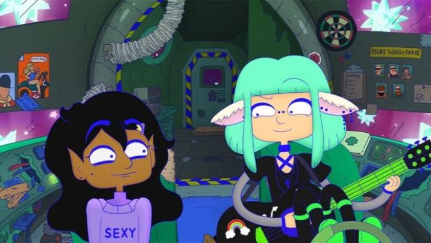

DISCLAIMER: Minor spoilers.In the indie film scene, one animated film that I kept seeing in my news feed was previews for "Lesbian Space Princess."... At least once a year or so, there's a film that keeps showing up in my news feed, as if it's a film audiences are looking forward to, or should look forward to, and I don't know how it got there. From the character designs, to the very literal and upfront title, this did not come across as something that warranted any attention. And for the most part, it's exactly what it looks like, a film you can judge entirely by the cover. This is not to say I have anything against the "lesbian" part of the film - I've seen several such films, some excellent and life-affirming. But also many that were incredibly empty, usually because they focused on representation (of the one group) and nothing else, like plot for example. But I've always been quick to give films a chance (especially 2D animation in any form, hence this site you're reading this on), so when a local art-house theatre had a limited screening of it, I bought a ticket. Yes, the story is mostly what you'd expect, not entirely from the title alone, but certainly from the poster. Saira is the main character, and as introduced by an accoustic-guitar-accompanied narrator, "she's a lesbian... in space... and also a princess..." She's the only princess of a futuristic, lesbian-only planet called Clitopolis, and unlike her very popular and social parents (the King and Queen), Saira is incredibly shy, socially-awkward, and introverted. Perfectly normal, but not on her planet, where her personality labels her as "weird," and abnormally unpopular. Saira's fortunes seem to turn better thanks to a romantic relationship with the adventurous bounty hunter Kiki, but the two are just too different, and the film opens with Kiki dumping her, just days before the annual dance party! But Kiki quickly finds herself kidnapped by a gang of "Straight White Maliens," who need to lure Saira out to their planet and man-cave. Against her instincts, Saira tries to gather the courage to bravely venture out into space to rescue her ex, with help from a... "old-fashioned-viewpoint" talking spaceship... and a songwriter who might have been a better match for Saira all along. Within that plot summary, there are several in-your-face puns that are simply unavoidable, and you'll know right away if this film is for you. That intended core audience is, perhaps exclusively, non-stragiht females. The type that would go "OMG, I know, RIIIIGHT?!?!" at every joke and pun in this film. The type that thinks piercings on random parts of the face is cool. The type of viewer that would randomly go "WHOO!" in the live audience, as a few did in my screening (seemingly without relation to an action or line of dialogue... I assume we had locals that worked remotely on the film's production). Regardless of whether you are the target gender and romance-preference demographic, there's something aggresively obnoxious about the movie's "Adventure-Time"-styled colour and designs, and jokes that REMIND you every single minute of the film that the characters are... lesbians (gasp!). Fine, "we're here, we're queer," but it's hard to simply "get used to it" when the movie and it's characters don't only wear it on their sleeve, it's practically tattooed in their forehead. And regarding "acceptance" and "representation," is it really so hard for a pro-LGBTQ film to have a straight male character... or even just a male character... that's an ally, and not regulate them to the narrow-minded villains? (Yes, perhaps some of us... mostt of us... do act and think like the "Maliens," but I take offense that it's assumed all of us do.) Those jokes are mostly in line with what you'd expect, although they're a bit more biting in their satire. A lot of it is typical Gen-Z goofy comedy, and occasional fourth-wall-breaking (like double-checking the movie's script to ensure they're at the right part of the story). But there's a LOT of sex humour (the planet is called "Clitopolis" after all, which is supposedly very hard to find), both on the part of lesbian and straight perceptions. There's a lot of jokes poking at male perceptions of lesbian women. But also, there are sentient genitalia dancing at the club. There are brief moments of shocking violence. There's a healthy dose of sex and nudity (as drawn by a Cartoon-Network-style artist, so don't get too excited). It's a weird tone - the rounded, non-triggering character designs look like it's be perfectly suitable for an audience of toddlers, and even a girl going on an adventure saving her girlfriend wouldn't be too far removed from a kids' film, but these extra bits make it hard-R. Who is this film meant for? "For us adult lesbians of course, screw the rest of you," but I don't think it's attracting for an inclusive subset of them. Past my personal issues of the movie's representation and who it's meant for, I do admit the movie is laugh-out-loud funny. However obnoxious and on-the-nose the frequent jokes are, it's hard not to laugh, no matter your romantic tastes. Several character conversations feel like "Monty Python" or "Flight of the Concords"-style humour (I believe the "Maliens" are voiced by a comedy troupe called "Aunty Donna"), where you want to openly face-palm yourself at how stupid some of the characters are, and what they think is correct to say. Again, it's for people who'd scream "OMG, I know, RIIIIGHT?!?!", but even I was nodding at some of the observational humour. I can look back on my notes and wonder if I was taking this movie too seriously - it's not a good film and wasn't really trying to be, it just wants to be fun. Also, Saira is a sweetheart, poor thing, you can't help but love her and want to give her a hug. But regarding her journey and the ending... it surprised me that the film didn't give her the new, better girlfriend. Instead, she's alone at the end, but on a newly positive note, she's totally fine with it. It's a rare moment of enlightened maturity, and is the point the movie wants you to leave on: to just love yourself and not care about what others think of you. But by basic storytelling standards, it's also quite unsatisfying, and I'm puzzled on how I felt about that. I've already made my point clear on how I feel about the art and animation of the movie. That the end credits are barely a minute long says a lot on the low-budget and effort. Both the animation and premise could have been a hit with a 10-minute short film, but I can't fathom what aspect of the movie warranted a feature-length in the team's mind. Most of the music is filled with original accoustic-guitar-only ballads, describing exactly what's on screen with poorly-written lyrics... I've seen this more than once in "quirky" indie films, and it's never worked (for anyone else, I'd recommend not hiring the first coffee-bar Thursday-night solo music act you see for your film, no matter how moved you are in the moment). The movie was produced in Australia, and all the characters have pretty strong accents - that adds some extra personality for international viewers, but it's hard to catch every word with the quality of recording they used. I wouldn't be surprised if "Lesbian Space Princess" finds itself a cult-audience at queer-film-festivals, for its riotous jokes and some lovable characters. It's fun, and we could leave it at that. But I can't help but shake this nagging feeling to expect better. For a demographic that has been begging for more and better representation in mainstream media, we shouldn't accept films with a two-word synopsis ("I'm gay!") as good enough, especially when other films have proven there's a better way to tell the stories of that demographic. And for increasingly cheaper production pipelines making the creation of film more accessible to all, we should stop and really question ourselves to whether our stories, writing, art, and music is worth two hours of a viewer's time, or just two minutes - a sea of hundreds of indie feature films a year (in animation alone!) can really drown out the gems, the very things that fuel my love for animation as a medium. Whereas short films (which this year, seemed to have a much larger festival attendance, featuring exactly the audience that would have loved this) allow you to quickly express the root of your idea and style, find your audience, and hone your skills until you're ready to make that colourful, genuine gem.
- "Ani" More reviews can be found at : https://2danicritic.github.io/ Previous review: review_LAVA Next review: review_Like_The_Clouds,_Like_The_Wind